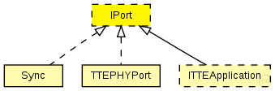

This documentation is released under the Creative Commons license
This documentation is released under the Creative Commons licenseInterface of TTEthernet ports. A port is a virtual instance that can receive critical traffic through its gates.
Modules implementing IPort are not necessarily physical ports.
See also: TTEPHYPort, Sync, ITTEApplication
Author: Till Steinbach
The following diagram shows usage relationships between types. Unresolved types are missing from the diagram. Click here to see the full picture.
The following diagram shows inheritance relationships for this type. Unresolved types are missing from the diagram. Click here to see the full picture.
| Name | Type | Description |
|---|---|---|
| ISync | module interface |
Synchronisation module interface |
| ITTEApplication | module interface |
Interface to be implemented by application models. Since this is an abstract module please do not instantiate it |
// // Interface of TTEthernet ports. A port is a virtual instance that can receive // critical traffic through its gates. // // Modules implementing IPort are not necessarily physical ports. // // @see TTEPHYPort, Sync, ITTEApplication // // @author Till Steinbach moduleinterface IPort { gates: //Input for time-triggered traffic input TTin @directIn @labels(TTFrame); //Input for rate-constrained traffic input RCin @directIn @labels(RCFrame); }
This documentation is released under the Creative Commons license